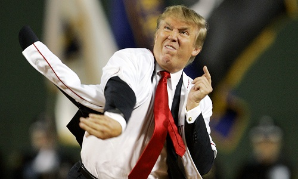

|
The outlook wasn't brilliant for the Shithole nine that day:
The score stood four to two, with but one inning more to play,
And then when Sessions died at first, and Cohen did the same,
A pall-like silence fell upon the patrons of the game.
A straggling few got up to go in deep despair. The rest
Clung to the hope which springs eternal in the human breast;
They thought, "If only Donald could but get a whack at that—
We'd put up even money now, with Donald at the bat."
But Rudi preceded Donald, as did also Huckabee,
And the former was a hoodoo, while the latter was a cake;
So upon that stricken multitude grim melancholy sat,
For there seemed but little chance of Donald getting to the bat.
But Rudi let drive a single, to the wonderment of all,
And Hucky, the much despised, tore the cover off the ball;
And when the dust had lifted, and men saw what had occurred,
There was Hucky safe at second and Rudi a-hugging third.
Then from five thousand throats and more there rose a lusty yell;
It rumbled through the valley, it rattled in the dell;
It pounded on the mountain and recoiled upon the flat,
For Donald, mighty Donald, was advancing to the bat.
There was ease in Donald's manner as he stepped into his place;
There was pride in Donald's bearing and a smile lit Donald's face.
And when, responding to the cheers, he lightly doffed his hat,
No stranger in the crowd could doubt 'twas Donald at the bat.
Ten thousand eyes were on him as he rubbed his hands with dirt;
Five thousand tongues applauded when he wiped them on his shirt;
Then while the writhing pitcher ground the ball into his hip,
Defiance flashed in Donald's eye, a sneer curled Donald's lip.
And now the leather-covered sphere came hurtling through the air,
And Donald stood a-watching it in haughty grandeur there.
Close by the sturdy batsman the ball unheeded sped—
"That ain't my style," said Donald. "Strike one!" the umpire said.
From the benches, black with people, there went up a muffled roar,
Like the beating of the storm-waves on a stern and distant shore;
"Kill him! Kill the umpire!" shouted someone on the stand;
And it's likely they'd have killed him had not Donald raised his hand.
With a smile of Christian charity great Donald's visage shone;
He stilled the rising tumult; he bade the game go on;
He signaled to the pitcher, and once more the dun sphere flew;
But Donald still ignored it and the umpire said, "Strike two!"
"Fraud!" cried the maddened thousands, and echo answered "Fraud!"
But one scornful look from Donald and the audience was awed.
They saw his face grow stern and cold, they saw his muscles strain,
And they knew that Donald wouldn't let that ball go by again.
The sneer is gone from Donald's lip, his teeth are clenched in hate,
He pounds with cruel violence his bat upon the plate;
And now the pitcher holds the ball, and now he lets it go,
And now the air is shattered by the force of Donald's blow.
Oh, somewhere in this favored land the sun is shining bright,
The band is playing somewhere, and somewhere hearts are light;
And somewhere men are laughing, and somewhere children shout,
But there is no joy in Shithole—mighty Donald has struck out.

|